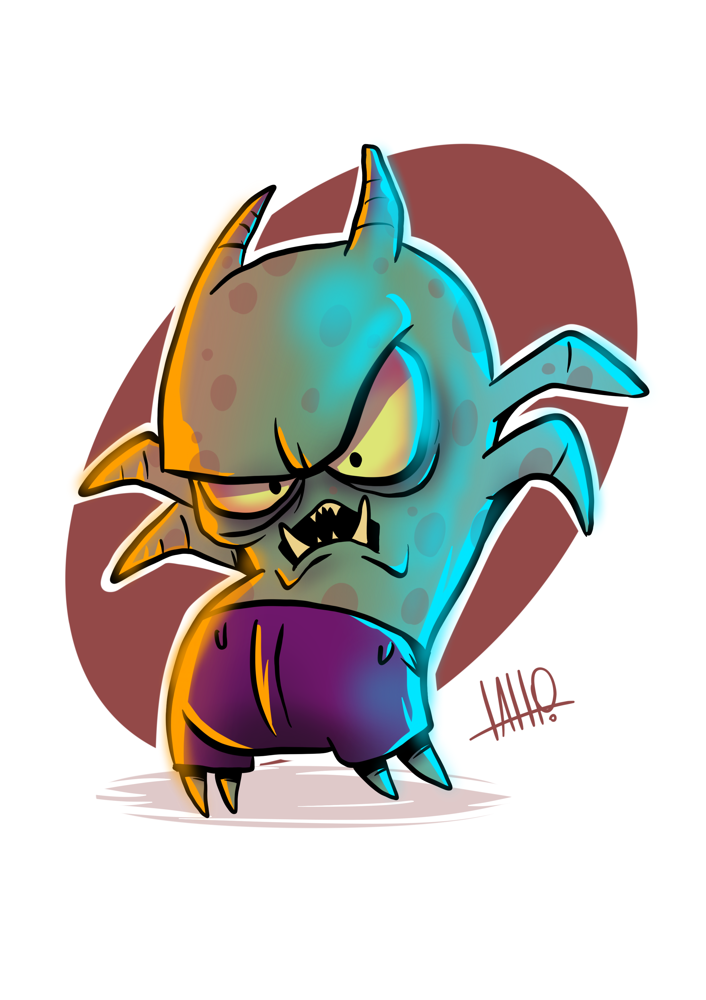

PRODUÇÕES (BEATS, REMIX, ETC)
VINYLA BEAST (REMIX, EDIT, ETC)

Vinyla Beast é um projeto criado por DJ Josafá, quando começou na produção musical. No projeto a ideia é revisitar algumas músicas que (talvez) não tenham o alcance merecido.
Você pode encontrar as produções aqui no site na seção APERTE O PLAY > MÚSICAS > REMIX.
Também pode apoiar o projeto no Bandcamp: https://vinylabeast.bandcamp.com/
PRODUÇÃO DE BEATS
.